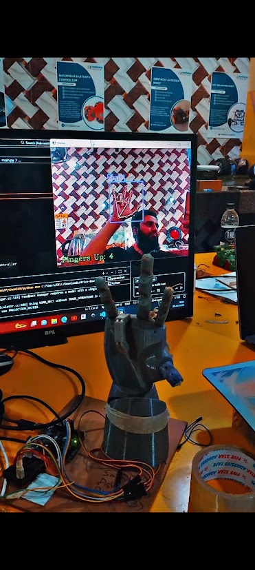

AI / Robotics
ROBOTIC HAND.
A 3D-printed robotic hand that mirrors your hand in real time. A webcam and a Python computer-vision script track which fingers are raised and drive five servos to match, over a serial link.

How it works
A webcam feeds video into a Python script running in VS Code. A hand-tracking model built on computer vision locates the hand in each frame and works out which of the five fingers are extended and which are curled. That five-value state is sent over a serial (USB) connection to a microcontroller, which moves one servo per finger, pulling or releasing the tendon strings threaded through the 3D-printed fingers so the hand mirrors the gesture almost instantly.
Components used
Identified from the build shown above. Exact part models may vary by supplier.
3D-printed robotic hand
A custom-prototyped articulated hand with fingers pulled by tendon strings routed through each joint.
5x micro servo motors
One servo per finger, each pulling or releasing its tendon string to curl or extend that finger.
Arduino (or compatible microcontroller)
Receives the finger state over serial from the PC and drives all five servos.
Webcam
Captures the live hand feed that the Python script processes frame by frame.
Python computer-vision hand tracking
A hand-tracking model (OpenCV plus a landmark-detection library) running in VS Code, working out which fingers are up in each frame.
USB serial link
Carries the finger state from the PC running the Python script to the microcontroller driving the servos.
Example code
Two parts: a Python script that tracks the hand and talks over serial, and an Arduino sketch that turns that data into servo movement.
1. Python: hand tracking (runs on the PC, in VS Code)
# ROBOVATIVE - Example Hand-Tracking Control Script
# Requires: opencv-python, cvzone, pyserial
# Tracks a hand with a webcam and sends the state of each finger
# (thumb, index, middle, ring, pinky) to the robotic hand over serial.
import cv2
from cvzone.HandTrackingModule import HandDetector
import serial
import time
arduino = serial.Serial('COM5', 9600) # match to your board's port
time.sleep(2) # let the connection settle
cap = cv2.VideoCapture(0)
detector = HandDetector(detectionCon=0.8, maxHands=1)
while True:
success, img = cap.read()
hands, img = detector.findHands(img)
if hands:
fingers = detector.fingersUp(hands[0]) # e.g. [0,1,1,1,0]
command = ''.join(str(f) for f in fingers) # e.g. "01110"
arduino.write((command + '\n').encode())
cv2.putText(img, f'Fingers Up: {sum(fingers)}', (20, 60),
cv2.FONT_HERSHEY_SIMPLEX, 1, (0, 255, 0), 2)
cv2.imshow("Hand Tracking", img)
if cv2.waitKey(1) & 0xFF == ord('q'):
break
cap.release()
cv2.destroyAllWindows()2. Arduino: servo control (runs on the microcontroller)
// ROBOVATIVE - Example Robotic Hand Sketch
// Receives a 5-character finger state string over serial
// ("1" = extended, "0" = curled) and moves one servo per finger.
// Pin numbers below are illustrative - match them to your own wiring.
#include <Servo.h>
Servo fingerServo[5];
const int servoPins[5] = {3, 5, 6, 9, 10}; // thumb, index, middle, ring, pinky
const int extendedAngle = 0;
const int curledAngle = 90;
void setup() {
Serial.begin(9600);
for (int i = 0; i < 5; i++) {
fingerServo[i].attach(servoPins[i]);
fingerServo[i].write(curledAngle);
}
}
void loop() {
if (Serial.available() > 0) {
String state = Serial.readStringUntil('\n');
if (state.length() == 5) {
for (int i = 0; i < 5; i++) {
int angle = (state[i] == '1') ? extendedAngle : curledAngle;
fingerServo[i].write(angle);
}
}
}
}